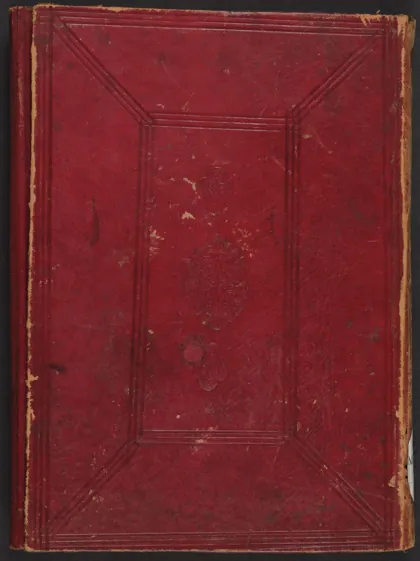

الأذكار
Al-Adzkar
Baca Al-Adzkar (الأذكار) karya Imam an-Nawawi secara gratis di Maktabah Ilmu: teks Arab, Indonesia (sebagian terjemah dibuat AI). Tanpa daftar, tanpa iklan.
Buka kitab iniLihat lemari ilmuDaftar isi
- الأذكار
- كلمة الناشر
- هذا الكتاب
- اسم الكتاب
- .....
- .....
- .....
- ....
- 1-
- 2-
- 3-
- 4-
- 5-
- 6-
- 7-
- مقدمة المؤلف
- 1-
- 2-
- 3-
- 4-
- 5-
- 6-
- 7-
- 8-
- 9-
- باب: أذكار اليوم والليلة:
- 10-
- 11-
- 12-
- 13-
- 14-
- 15-
- 16-
- 17-
- 18-
- 19-
- 20-
- 21-
- 22-
- 23-
- 24-
- 25-
- 26-
- 27-
- 28-
- 29-
- 30-
- 31-
- 32-
- 33-
- 34-
- 35-
- 36-
- 37-
- 38-
- 39-
- 40-
- 41-
- 42-
- 8-
… dan 2803 bab lainnya.